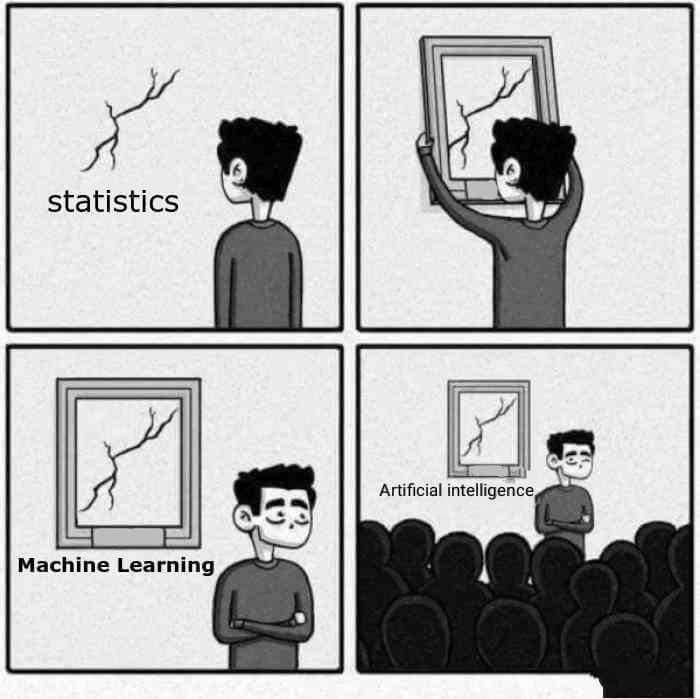
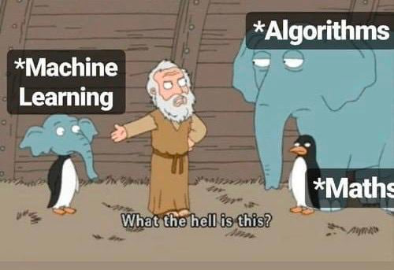
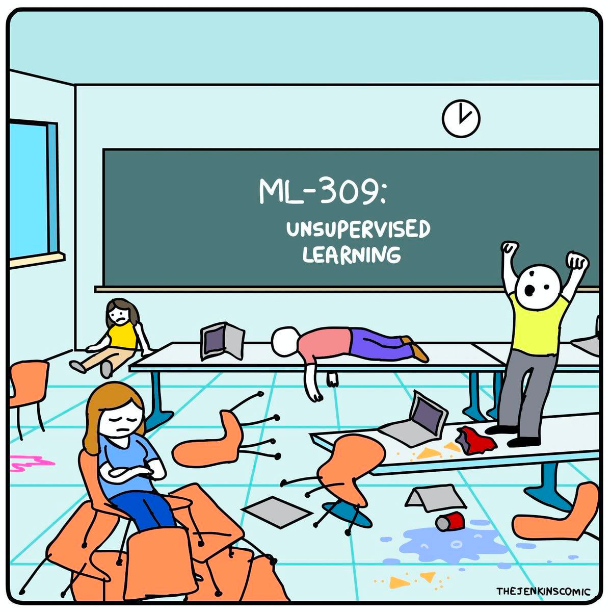

En el menú de las diapositivas (abajo a la izquierda) tienes una opción para descargarlas en pdf en Tools (consejo: no lo hagas hasta el final del curso ya que irán modificándose)
Se darán por asumido conocimientos aprendidos de R base, tidyverse y ggplot
Se darán por asumido conocimientos aprendidos de Quarto, diapositivas en Quarto y Github. Para las entregas SOLO SE VALORARÁ la salida html correspondiente.
Recomendable: saber usar la calculadora en modo estadístico.
En esta asignatura vamos a tratar principalmente lo que se conoce en el aprendizaje estadístico como predicción (continua)
Dada una variable objetivo (variable dependiente), y con la información aportada por un conjunto de variables predictoras (covariables), el objetivo será obtener una estimación/predicción lo «mejor posible» haciendo uso de un
modelo supervisado de predicciónlineal (conocido como regresión lineal)
Ciencia de Datos
La ciencia de datos es precisamente la rama que integra las matemáticas, la estadística, la probabilidad, el Machine Learning e incluso el Big Data

¿Modelo supervisado?
modelo supervisado de predicción lineal
En esta asignatura veremos el modelo más simple de lo que se conoce como aprendizaje estadístico (Machine Learning), en concreto del conocido como aprendizaje supervisado

Aprendizaje ¿supervisado?

Aprendizaje ¿supervisado?
En el campo del Machine Learning hay principalmente dos tipos de modelos:
Aprendizaje supervisado: tendremos dos tipos de variables, la variable dependiente (output/target) que se quiere predecir/clasificar, normalmente denotada como \(Y\), y las variables independientes (inputs) o explicativas o predictoras, que contienen la información disponible. Ejemplos: regresión, knn, árboles, etc.
Aprendizaje ¿supervisado?
En el campo del Machine Learning hay principalmente dos tipos de modelos:
Aprendizaje no supervisado: no existe la distinción entre target y variables explicativas ya que no tenemos etiquetados los datos, no sabemos a priori la respuesta correcta. El aprendizaje no supervisado buscará patrones basados en similitudes/diferencias. Ejemplos: PCA, clustering, redes neuronales, etc.
Modelo predictivo
Dentro del marco de un modelo de predicción supervisada tendrá siempre la siguiente forma:
\(\varepsilon\) será el error o ruido, una variable aleatoria de media 0\(E \left[\varepsilon | \boldsymbol{X} = x \right] = 0\) (el error debería ser reducido a algo aleatorio (irreducible), aunque en estadística SIEMPRE nos vamos a equivocar).
Clasificación vs predicción
modelo supervisado de predicción lineal
La regresión lineal se enmarca dentro del predicción supervisada
Predicción: la variable objetivo es una variable cuantitativa continua (por ejemplo, precio, glucosa, peso, etc).
Clasificación: la variable objetivo es una variable cualitativa (por ejemplo, especie de flor, ausencia/presencia de enfermedad, si/no, etc) o cuantitativa discreta (por ejemplo, número de accidentes). La etiqueta tomará un valor dentro del conjunto de modalidades permitidas, pudiendo ser binaria (si/no) o multiclase (A, B, C, D).
üìö Ver ¬´The elements of Statistical Learning¬ª (Hastie et al., 2008)
Ambas se pueden resumir en \(f(a*x + b*y) = a*f(x) + b*f(y)\)
En estadística llamamos modelo de predicción lineal a un modelo que usa la información de covariables \(X_1, X_2, \ldots, X_p\), de manera que su información siempre se relacionen entre sí con sumas y restas.
Ejemplos no lineales: \(y = 2*\frac{1}{x_1}\) o \(y = 4 - x_{1}^{2} - x_2\) o \(y = ln(x_1) + cos(x_2)\)
Repaso descriptiva
La estadística descriptiva es una rama de la estadística que se dedica a recolectar, organizar, presentar y analizar un conjunto de datos para describir las características y comportamientos de dicho conjunto.
Además de para conocer y entender los datos es la fase en la que detectaremos errores e incongruencias, teniendo muchas veces que hacer una depuración de datos
Ejemplo: la diferencia entre censo y encuesta es que el primero recopila datos de todos los individuos de una población, mientras que el segundo trata de estimarlos o inferirlos a partir de una muestra representativa de la misma.
Conceptos básicos
Muestra: subconjunto de la población que se selecciona para su análisis con el fin de hacer inferencias o generalizaciones sobre la población completa. La muestra debe ser representativa de la población.
Muestreo aleatorio simple: cada miembro de la población tiene la misma probabilidad de ser seleccionado.
Muestreo estratificado: la población se divide en subgrupos (estratos) y se toma una muestra de cada uno.
El sesgo del superviviente (un tipo de sesgo de selección) aparece cuando se toma una muestra de un fenómeno ignorando si los individuos elegidos tienen las mismas opciones respecto al mismo.
Conceptos básicos
Variable: cualquier característica o atributo que puede tomar diferentes valores entre los individuos de la población o muestra. Las variables pueden ser de varios tipos según su naturaleza:
Cualitativas (o categóricas): describen cualidades o categorías. Ejemplos:
Variable: cualquier característica o atributo que puede tomar diferentes valores entre los individuos de la población o muestra. Las variables pueden ser de varios tipos según su naturaleza:
Discretas infinitas: toman valores infinitos (o que se podrían considerar como tal) pero podemos enumerarlas y sabemos siempre el siguiente elemento (e.g., número de pelos de nuestra cabellera, número de personas que pueden entrar en una tienda en un periodo dado).
Continuas: pueden tomar cualquier valor dentro de un rango (e.g., altura, peso, tiempo de espera).
Cualitativa nominal (color de ojos): negro, azul y marrón (3 modalidades en esa muestra de un espectro de colores más amplio que podríamos tener como soporte).
Cualitativa ordinal (estado del paciente): sano, leve y grave (3 modalidades en esa muestra de un conjunto de opciones - por ejemplo, sano, leve, grave, UCI, fallecido - que podríamos tener).
Repaso: continua vs discreta
Repaso: medidas de centralización
Media: dada una muestra \(\boldsymbol{x} =\left(x_1, \ldots, x_n \right)\), la media muestral \(\overline{x}\) se define como la suma de todos los valores dividida por el tamaño muestral
No es un valor de los datos (la media de {1, 2, 3, 4} es 2.5)
Poco robusta (valores atípicos le afectan mucho)
Solo se puede definir para variables cuantitativas
Repaso: medidas de centralización
Mediana: dada una muestra \(\boldsymbol{x} =\left(x_1, \ldots, x_n \right)\), la mediana muestral se define como el valor que es mayor o igual que al menos el 50%, y menor igual que al menos el 50% de los datos
La mediana es el valor de en medio si ordenamos los datos (y si se pueden ordenar…)
Mediana muestral
VENTAJAS
Suele ser un valor de la muestra
Un poco más robusta que la media
DESVENTAJAS
Muy ineficiente (requiere un algoritmo de ordenación)
Solo definida para cuantitativas o cualitativas ordinales
Repaso: medidas de centralización
Moda: dada una muestra \(\boldsymbol{x} =\left(x_1, \ldots, x_n \right)\), la moda muestral se define como el valor o valores más repetidos (en caso de que existan).
El cambio climático no solo es porque aumente la temperatura media (centralización) sino por la aparición cada vez más frecuente de fenómenos extremos
Aumento de la variabilidad → aumento de la DISPERSIÓN
Repaso: medidas de dispersión
¿Cómo medir lo que se alejan los datos de la media?
Imagina que tenemos la siguiente muestra \(X = \left\lbrace -5, -3, -1, 0, 1, 3, 5 \right\rbrace\).
¿Cuánto vale la media?
La media vale 0 y la distancia a ella es…la propia muestra \(\left\lbrace -5, -3, -1, 0, 1, 3, 5 \right\rbrace\). ¿Cuál es el promedio de dichas distancias?
Pues…de nuevo vale 0.
Si la dispersión es 0…¿no hay dispersión? ¿No debería de dar 0 solo cuando los datos sean constantes?
Repaso: medidas de dispersión
Para evitar que se cancelen los signos lo que haremos será calcular el promedio PERO de las distancias al cuadrado, la conocida como varianza
Las medidas de posición o localización nos localizan los datos, siendo valores que nos dividen un conjunto ordenado en subconjuntos del mismo tamaño (ejemplo: mediana es percentil 50).
Percentil: valores \(P_{\alpha}\) del conjunto ordenado que dejan por debajo, al menos, el \(\alpha\)% de datos y \(\alpha\)% por encima.
Decil: valores \(D_{\alpha}\) que dividen los datos en 10 partes iguales.
Cuartil: valores \(C_{\alpha}\) o \(q_{\alpha}\) que dividen los datos en 4 partes iguales.
La varianza es el promedio de las desviaciones al cuadrado (respecto a la media), apareciendo dos veces dicha desviación: puede ser entendida como una medida que cuantifica la relación de una variable CONSIGO MISMA
Al igual que pasaba con la varianza, la covarianza depende de las unidades y magnitudes de los datos, así que lo que haremos será estandarizar la covarianza. Definiremos la coeficiente correlación lineal (de Pearson) como la covarianza dividida entre el producto de las desviaciones típicas (adimensional)
\[r_{xy} = \rho_{xy} = \frac{s_{xy}}{s_x s_y}\]
Tiene el mismo signo que la covarianza (el denominador es siempre positivo) y sus valores siempre están entre -1 y 1
más cerca de -1 o 1 → relación lineal más fuerte
más cerca de 0 → ausencia de relación LINEAL
Repaso: covarianza y correlación
üê£ Caso práctico I: anscombe
En el paquete {datasets} se encuentra el dataset conocido como cuarteto de Anscombe, un dataset que cuenta con 4 conjuntos de datos.
Uno de los principales objetivos de la estadística bivariante es determinar si existe relación o dependencia entre dos variables, es decir, cuando un cambio en el valor de una de ellas se asocia a un cambio en el de la otra (una dependencia estadística no implica un efecto causal).
La situación contraria, es decir, la ausencia de relación, se denomina independencia.
Tipos de análisis posibles
Una primera aproximación al estudio de dos variables será clasificar el tipo de análisis
Cuali vs cuali:
Resumen: tablas de contigencia (frecuencia cruzada).
Inferencia: prueba \(\chi^2\) de independencia o test de Fisher.
Gráficos: barras apiladas, gofres, gráficos de «flujo».
Tipos de análisis posibles
Una primera aproximación al estudio de dos variables será clasificar el tipo de análisis
Cuani vs cuanti:
Resumen: covarianza y correlación.
Inferencia: test de correlación (relación lineal) y test de Kolmogorov-Smirnov (¿ambas distribuciones son iguales?). Test de igualdad de medias o igualdad de varianzas
Gráficos: diagrama de dispersión, correlogramas, heatmaps.
Tipos de análisis posibles
Una primera aproximación al estudio de dos variables será clasificar el tipo de análisis
Cuanti vs cuali:
Resumen: medidas de centralización/dispersión/posición de la cuanti desagregado por los grupos de la cuali.
Inferencia: ANOVA (una vía, dos vías, …). Test de igualdad de medias o igualdad de varianzas (desagregada por grupos)
Gráficos: boxplots, gráficos de violín (desagregados por grupos)
Su propósito es utilizar la información muestral para estimar características de la población, probar hipótesis y realizar predicciones, basado en el cálculo de estadísticos
Parámetro: medida que describe una característica de la población (ejemplo: la media poblacional \(\mu\) de la estatura de las mujeres en España).
Estadístico: medida que describe una característica de la muestra (ejemplo: la media muestral \(\overline{x}\) de un conjunto de 100 mujeres).
Repaso: inferencia
Haciendo uso de estadísticos que aproximen una correcta estimación de los parámetros, los contraste de hipótesis son procedimientos estadísticos para tomar decisiones sobre la validez de una afirmación acerca de una población en función de los datos muestrales.
La idea es muy parecido a un juicio: con las pruebas (muestra) el jurado (estadístico) deben decidir sobre tu culpabilidad real (población), pudiendo ser declarado culpable o no culpable.
Este proceso implica formula
Hipótesis nula\(H_0\): es una afirmación generalmente representa una posición de no efecto o no diferencia (ejemplo: entras siendo no culpable a un juicio)
Hipótesis alternativa\(H_0\): es una afirmación que se acepta si se rechaza la hipótesis nula. Representa un efecto o diferencia (ejemplo: culpable)
Repaso: inferencia
Hipótesis nula\(H_0\): es una afirmación generalmente representa una posición de no efecto o no diferencia (ejemplo: entras siendo no culpable a un juicio)
Hipótesis alternativa\(H_1\): es una afirmación que se acepta si se rechaza la hipótesis nula. Representa un efecto o diferencia (ejemplo: culpable)
La idea es similar a la del juicio: solo vamos a rechazar \(H_0\) (es decir, aceptar \(H_1\)) si hay MUCHAS EVIDENCIAS en la muestra (solo se condena culpable a una persona si hay muchas evidencias que demuestran su culpabilidad, pero el acusado no tiene que demostrar su inocencia).
Llamaremos nivel de significancia\(\alpha\) a la probabilidad de rechazar la hipótesis nula cuando es verdadera (condenar a un inocente, conocido como error tipo I. Normalmente \(\alpha = 0.05\) aunque se pueden usar otros valores como 0.01 o 0.10 (a decidir ANTES de realizar el contraste.)
Podemos definir el p-valor como un valor continuo que nos mide la compatibilidad de los datos observados con el modelo e hipótesis asumidas: 1 indica compatibilidad perfecta y 0 incompatibilidad completa.
No repesenta la probabilidad de que la hipótesis nula sea cierta: el propio p-valor se calcula ASUMIENDO que lo es.
No representa la probabilidad de que, por azar, se produzca nada
Asociación cuali vs cuali
Una vez visto conceptos básicos de inferencia vamos a empezar por un análisis bivariante de dos variables cualitativas
El primer paso siempre será intentar resumir la información mediante el uso de tablas de contigencia, en este caso bidimensionales.
¿Cómo lo harías con tidyverse? ¿Y con R base?
Tablas de contigencia
Vamos a tomar la base de datos SatisfaccionPacientes.csv que captura datos de una encuesta de satisfacción de pacientes en un hospital
Lo habitual es mostrar esta tabla como una tabla con m filas y n columnas, siendo \(m\) el número de modalidades distintas de la primera variable (en este caso \(m=2\), femenino y masculino) y \(n\) el número de modalidades distintas de la segunda variable (en este caso \(n = 4\)).
¿Cómo hacer que la variable estado_civil pivote para pasar de estar en vertical a estar «en horizontal»? (echa un repaso a la parte de tidy data)
datos |>count(genero, estado_civil) |>pivot_wider(names_from = estado_civil, values_from = n)
üìù Aplica el c√≥digo que sea necesario para responder a estas preguntas. ¿Cuál es el tama√±o muestral? ¿Cuántas variables tenemos? ¿Cuántas modalidades tenemos en la variable estado_civil (y cuantas observaciones en cada una)?
# no podemos calcular acumulados ya que genero es nominaldatos |>count(genero) |>rename(frecuencia_abs = n) |>mutate(frecuencia_rel = frecuencia_abs/sum(frecuencia_abs))# Hay 53 mujeresdatos |>count(estado_civil) |>rename(frecuencia_abs = n) |>mutate(frecuencia_rel = frecuencia_abs/sum(frecuencia_abs))# Hay 26% personas casadas
üìù Convierte de manera adecuada la variable genero y estado_civil a cualitativa nominal
Código
datos <- datos |>mutate(estado_civil =factor(estado_civil),genero =factor(genero))
üìù Calcula la media, mediana, rango intercuart√≠lico y desviaci√≥n t√≠pica de edad y tiempo de espera.
ggplot(datos) +geom_violin(aes(x = genero, y = tiempo_espera, fill = genero, color = genero),alpha =0.7) + ggthemes::scale_color_colorblind() + ggthemes::scale_fill_colorblind() +theme_minimal()
üê£ Caso práctico I: encuesta de satisfacci√≥n
Vamos a seguir poniendo en práctica lo aprendido el dataset SatisfaccionPacientes.csv
Intenta responder a las preguntas planteadas en el workbook
Asociación cuali vs cuali
Esas tablas de frecuencia serán las que usen los diferentes contrastes de asociación cuali vs cuali para decidir si hay o no dependencia.
El contraste más conocido es la conocida como prueba de \(\chi^2\) (chi-cuadrado): dada una tabla de contigencia entre dos cualitativas, el contraste compara dicha tabla con la que deberíamos obtener bajo la hipótesis nula de independencia
Vamos a hacerlo con nuestras variables genero y estado_civil
Prueba chi-cuadrado
\[H_0:~\text{genero y estado civil son independientes}\]
\[H_1:~\text{genero y estado civil son dependientes}\]
Si ambas variables fuesen independientes, en cada columna tendríamos que tener porcentajes parecidos a cuando lo hacemos sin desagregar (53% mujeres y 47% hombres). Es decir, del total de casados (26) deberíamos tener \(8.48\) mujeres y \(7.52\) hombres; del total de divorciados (19) deberíamos tener \(10.07\) mujeres y \(8.93\) hombres; y así sucesivamente. Estas frecuencias las denotaremos como frecuencias esperadas \(E_{ij}\)
\[E_{ij} = \frac{\text{suma fila i * suma fila j}}{\text{total}}\]
Prueba chi-cuadrado
Resumimos lo que se desvía una de otra mediante el estadístico chi-cuadrado:
Pearson's Chi-squared test
data: datos$genero and datos$estado_civil
X-squared = 2.7573, df = 3, p-value = 0.4306
Como \(p.value = 0.4306 > \alpha = 0.05\), no podemos rechazar la hipótesis nula: no hay evidencias suficientes en la muestra para concluir que haya dependencia.
Prueba de Fisher
Otra alternativa es el test exacto de Fisher, una prueba estadística utilizada para determinar si hay una asociación significativa entre dos variables cualitativas especialmente útil cuando las frecuencias esperadas son bajas y tenemos dos grupos en cada cualitativa (la tabla de frecuencias es \(2 \times 2\)).
Fisher's Exact Test for Count Data
data: datos_placebo$observado and datos_placebo$grupo_tratamiento
p-value = 0.01336
alternative hypothesis: true odds ratio is not equal to 1
95 percent confidence interval:
1.308438 57.326435
sample estimates:
odds ratio
7.386906
Si te fijas ahora nos devuelve además un contraste de lo que se conoce como odds ratio (OR: razón de probabilidades)
alternative hypothesis: true odds ratio is not equal to 1
La interpretación de Odds ratio (OR) es cuantificar la asociación entre dos variables respecto a una asociación espúrea ¿Cuánto mejoran los que tomaron medicamento respecto a una posible mejora basal (aleatoria) del placebo?
Prevalencia de mejora en tratados: \(13/(3+13) = 0.8125\)
Prevalencia de mejora en placebo: \(6/(11+6) = 0.35294\)
\[RR = \frac{13/(3+13)}{6/(11+6)} = \frac{13*11}{6*3} = 2.30208\] Los pacientes sometidos a tratamiento tienen más del doble de «riesgo» de mejorar que los pacientes con placebo.
Sabemos realizar un diagrama de barras de cada una por separado, ¿cómo incluir la información de ambas con geom_bar()
Piensa cómo hacerlo recordando que geom_bar() solo admite una coordenada x = ... o y = .... ¿Cómo incluir la info de otra variable que no sea en x o y?
La función geom_bar() nos permite jugar un poco con el tipo de barras, que por defecto las muestra stacked (apiladas). Dicho ajuste podemos cambiarlo con el argumento position: si position = "dodge" las muestra de manera agrupada una detrás de otra.
La mejor opción para visualizar si hay asociación es que cada barra de estado civil representa el total y nos muestre el % de cada sexo en cada una: si fuesen independientes, el reparto por sexo en cada barra debería ser similar. Lo haremos con position = "fill"
datos <-read_csv(file ="./datos/placebo_medicamento_completo.csv")
üìù A√±ade una nueva variable dicot√≥mica a los datos que nos guarde mejora si el paciente mejor√≥ tras el tratamiento y no mejora en caso negativo
Código
datos <- datos |>mutate("mejora"=if_else(colesterol_post <= colesterol_pre, "mejora","no mejora"))
üìù Visualiza ambas variables (mejora y tratamiento) a la vez con un diagrama de barras de manera que podamos observar indicios de una posible independencia o dependencia entre ambas. Hazlo antes a papel y boli si lo necesitas
Código
# así pintaríamos en cada barra de tratamiento los mejora o no mejoraggplot(datos) +geom_bar(aes(x = tratamiento, fill = mejora), alpha =0.6) + ggthemes::scale_fill_colorblind() +theme_minimal()# pero dado que tienes más tratados que del grupo control# no permite comparar bien así que igualamos las barras# para que cada barra sea el 100% de su categoríaggplot(datos) +geom_bar(aes(x = tratamiento, fill = mejora), alpha =0.6,position ="fill") + ggthemes::scale_fill_colorblind() +theme_minimal()# Parece evidente visualmente que hay una diferencia entre mejora y no mejora# en cada barra
üìù Calcula la tabla de frecuencias absoluta y relativa que consideres necesarias para responder a las siguientes preguntas:
¿Cuántas personas de las tratadas con medicamento no mejoraron?
table(datos$tratamiento, datos$mejora)prop.table(table(datos$tratamiento, datos$mejora))prop.table(table(datos$tratamiento, datos$mejora), margin =1)prop.table(table(datos$tratamiento, datos$mejora), margin =2)# 9 personas de las tratadas con medicamento no mejoraron# 9% del total de personas mejoraron y tomaron placebo# 37% de los que no mejoraron habían tomado la medicación# 88.1% de los que tomaron medicamento mejoraron
üìù Para confirmar y cuantificar las evidencias que ya tenemos, vamos a realizar un contraste de hip√≥tesis. Realiza la prueba de chi-cuadrado e interpreta el resultado con \(\alpha = 0.05\).
Código
chisq.test(datos$tratamiento, datos$mejora)# Dado que p-value = 1.654e-06 << alpha --> debemos rechazar la hipótesis nula --># hay evidencias suficientes para afirmar que hay relación de dependencia
Realiza la prueba de chi-cuadrado y Fisher e incluye los p-valores en una tabla resumen haciendo uso de tidyverse. Exporta a un .csv dicha tabla resumen
Código
resumen_pvalores <- datos |>summarise("sig_chisq"=chisq.test(datos$tratamiento, datos$mejora)$p.value,"sig_fisher"=fisher.test(datos$tratamiento, datos$mejora)$p.value)write_csv(resumen_pvalores, file ="./datos/resumen_pvalores.csv")
üìù Realiza la prueba de Fisher y mira la salida completa. Interpreta la salida, no solo del contraste sino de los odd ratio.
Código
fisher.test(datos$tratamiento, datos$mejora)
Fisher's Exact Test for Count Data
data: datos$tratamiento and datos$mejora
p-value = 2.519e-06
alternative hypothesis: true odds ratio is not equal to 1
95 percent confidence interval:
3.722458 42.096028
sample estimates:
odds ratio
11.95213
Código
# OR estimado es de 11.95 --> al ser mayor que 1 implica que# hay una asociación positiva entre las variables# hay 12 veces más opciones de que te baje el colesterol si tomas el# medicamento respecto a una posible mejora aleatoria (porque sí).
üê£ Caso práctico II: bronquitis y tabaco
Vamos a cargar el archivo de datos fumadores.csv donde tenemos datos de 96 pacientes sobre sí o fuman y quienes han desarrollado o no bronquitis.
datos <-read_csv(file ="./datos/fumadores.csv")datos
Intenta responder a las preguntas planteadas en el workbook
üê£ Caso práctico III: salud mental
Esta la base de datos datos_salud_mental.csv tenemos información recopilada de 100 pacientes que acuden a un centro de salud mental. Se quiere realizar un estudio para ver el impacto que tienen distintas características sobre la ansiedad y depresión en estos 100 pacientes. Los datos incluyen una variedad de variables relacionadas con la salud mental, así como características demográficas y de estilo de vida.
datos <-read_csv(file ="./datos/datos_salud_mental.csv") |> janitor::clean_names()
Intenta responder a las preguntas planteadas en el workbook
Asociación cuanti vs cuanti
Como decíamos, la idea detrás de la covarianza es una “varianza” entre dos variales (la varianza es una covarianza de una variable consigo misma), midiendo el promedio de lo que se desvía cada una respecto a su media
Vamos a practicar una vez más como hacerlo a mano con el siguiente ejercicio.
Correlación lineal
En la tabla inferior se han recopilado (del 2013 al 2022) la temperatura media en el mes de abril en Madrid (variable X, en ºC) y el número de días (variable Y) en el que el nivel de ozono superó las 0.20 ppm (partes por millón)
¿Cuál fue media de días en los que se superó umbral de ozono de 0.20 ppm?
¿Cuál fue media de días en los que se superó umbral de ozono en los años que la temperatura media en marzo superó los 17.4ºC?
¿Cuál es su covarianza?
Correlación lineal
Repite el ejercicio con pocas líneas de código R
¿Cuál fue la media de días en los que se superó el umbral de ozono de 0.20 ppm?
¿Cuál fue la media de días en los que se superó el umbral de ozono en los años que la temperatura media en marzo superó los 17.4ºC?
height mass birth_year
height 957.3802 676.8867 -2164.10
mass 676.8867 46313.2034 17402.55
birth_year -2164.1002 17402.5466 28603.04
Podemos usar la función cov() sin más, fuera de un resumen, obteniendo lo que se conoce como matriz de (cuasi)covarianzas y que tendrá un papel fundamental en estadística ya que contiene la información (= varianza) del dataset.
La matriz de (cuasi)covarianzas se denota como \(\Sigma\) y sus elementos se define como \(\Sigma_{ii} = s_{x_i}^{2}\) para la diagonal y \(\Sigma_{ij} = \Sigma_{ji} = s_{x_i x_j}\) fuera de ella.
Importante
Recuerda que los softwares estadísticos nos devuelven siempre la cuasi covarianza, dividido entre \(n-1\) y no entre \(n\). La cuasivarianza y la cuasicovarianza son los mejores estimadores muestrales (insesgados) de los respectivos parámetros poblaciones
Matriz de correlaciones
De la misma manera con cor() podemos calcular la matriz de correlaciones (en este caso sin el cuasi ya que se cancelan denominadores)
height mass birth_year
height 1.0000000 0.1016533 -0.4135510
mass 0.1016533 1.0000000 0.4781391
birth_year -0.4135510 0.4781391 1.0000000
La matriz de correlaciones se denota como \(R\) y sus elementos se define como \(r_{ii} = 1\) para la diagonal y \(r_{ij} = r_{x_ix_j}\) fuera de ella, y nos proporciona la dependencia lineal entre variables ya de manera estandarizada.
Matriz de correlaciones
¿Se te ocurre alguna manera de calcular la matriz de correlaciones a partir de la de covarianzas?
Correlación vs dependencia
Podemos tener variables incorreladas, con correlación nula, pero que exista dependencia entre ellas: la covarianza/correlación SOLO CAPTURA relaciones lineales, nada más.
Veamos un ejemplo sencillo con \(X = \left\lbrace -1, 0, 1 \right\rbrace\) y \(Y = X^2 = \left\lbrace 1, 0, 1 \right\rbrace\).
La media de ambas es nula
La media del producto es la media de \(XY = \left\lbrace -1, 0, 1 \right\rbrace\), que es de nuevo nula
Así la covarianza \(\overline{x*y} - \overline{x}*\overline{y}\) es nula a pesar de tener la mayor dependencia posible (dependencia funcional)
¿Pero cómo saber que la correlación observada es suficientemente pequeña para considerarse incorreladas?
Con un contraste de correlaciones haciendo uso de cor.test()
cor.test(starwars$mass, starwars$height)
Pearson's product-moment correlation
data: starwars$mass and starwars$height
t = 0.99653, df = 57, p-value = 0.3232
alternative hypothesis: true correlation is not equal to 0
95 percent confidence interval:
-0.1295651 0.3743950
sample estimates:
cor
0.130859
Otras correlaciones
La correlación de Pearson asume que las variables están distribuidas normalmente, en caso de existir asociación tienen una relación lineal y no tienen valores atípicos.
Por ello existen dos alternativas: correlación de Spearman y correlación de Kendall
Dados \(\left(x_1, y_1\right), \ldots, \left(x_n, y_n\right)\) un conjunto de observaciones, se dice que \(\left(x_{i},y_{i}\right)\) y \(\left(x_{j},y_{j}\right)\) (con \(i < j\)) son un par concordante si el orden de clasificación coincide (\(x_i < x_j,~y_i < y_j\) o bien \(x_j < x_i,~y_j < y_i\))
datos |>select(where(is.numeric)) |>cor()datos |>select(where(is.numeric)) |> corrr::correlate()
üìù Analiza y argumenta, en funci√≥n de los resultados anteriores, la asociaci√≥n entre edad y grado_satisfaccion, y entre tiempo_espera y grado_satisfaccion
Código
# Vemos que por ejemplo `edad` no correla con `grado_satisfaccion` ($-0.0339$) pero `tiempo_espera` tiene una correlación negativa ($-0.586$) con `grado_satisfaccion`.
üìù Con el paquete {corrplot} visualiza la matriz de correlaciones
Código
datos |>select(where(is.numeric)) |>cor() |> corrplot::corrplot(method ="square")
üìù Investiga el paquete {GGally} y a funci√≥n ggpairs() para visualizar las correlaciones de todas las variables (salvo id)
# cuali vs cuali: pictogramas (con rectángulos)# cuanti vs cuanti: scatter plot# cuanti vs cuali: boxplot desagregados# variable vs sí misma: densidad
üìù ¿C√≥mo saber que la correlaci√≥n observada entre edad y grado_satisfaccion (\(-0.0339\)) es suficientemente peque√±a para considerarse incorreladas? ¿C√≥mo saber si la correlaci√≥n entre tiempo_espera y grado_satisfaccion (\(-0.586\)) es suficientemente grande para considerar que es significativa?
Código
cor.test(datos$edad, datos$grado_satisfaccion)cor.test(datos$tiempo_espera, datos$grado_satisfaccion)# En uno el p-valor es bastante alto (**no rechazamos la hipótesis nula de incorrelación**) y en otro el p-valor es prácticamente 0 (rechazamos la hipótesis nula -> **hay evidencias de correlación significativa**).
Clase 3: análisis de la varianza
Asociación cuali vs cuanti: análisis de la varianza (30 de enero de 2025)
…
Clase 4: análisis de la varianza
Asociación cuali vs cuanti: análisis de la varianza (4 de febrero de 2025)

.png)